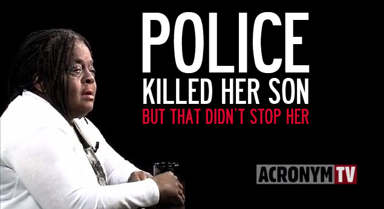
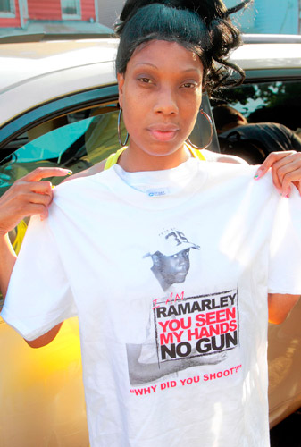

Growing up in the Bronx, in my neighborhood, I saw a lot of corruption. There was a lot of police brutality going on. Parents and friends had loved ones taken away from them, murdered by the NYPD. This has become an important issue for me. Last year, two women named Juanita Young and Iris Baez, came to my school to speak us. They had both lost their sons to police brutality. Juanita’s story really moved me because the building where it happened 17 years ago is a building that I visit all of the time. I had no idea of the history. There are many women out there like Juanita and Iris who are fighting to change the system and how police and the law relate to the community. Juanita is part of an organization called Popular Resistance. I believe communities should stand up for their rights. It can’t be just one person. It needs to be all of us standing together. I really want my neighborhood to become a better place and I want to learn as much as I can to help. This is one of the most important reasons I want to be able to motivate other teens to stop being bystanders and to get involved in their communities.
The black teenager had just reached into his waistband for what the New York City police officer assumed was a gun. As the officer, Richard Haste, later told a Bronx grand jury, he thought he was about to die.But there was no gun in the hand of the teenager, Ramarley Graham, only a bag of marijuana, which Mr. Graham threw into a toilet before that single shot killed him. Ultimately, the grand jury did not indict Officer Haste in the 2012 death of the 18-year-old, illustrating the standard by which police shootings are typically evaluated for criminal prosecution: What matters is the perspective of the officer, with an officer’s sense of danger given significant weight.
